docker 安装gitlab以及使用
一、安装及配置
1.gitlab镜像拉取
1 | # gitlab-ce为稳定版本，后面不填写版本则默认pull最新latest版本 |
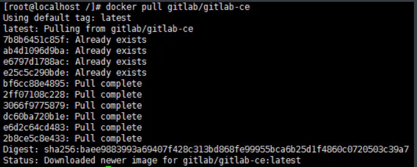
拉取镜像
2.运行gitlab镜像
1 | $ docker run -d -p 443:443 -p 80:80 -p 222:22 --name gitlab --restart always -v /home/gitlab/config:/etc/gitlab -v /home/gitlab/logs:/var/log/gitlab -v /home/gitlab/data:/var/opt/gitlab gitlab/gitlab-ce |
运行成功后出现一串字符串
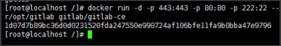
运行成功
3.配置
按上面的方式，gitlab容器运行没问题，但在gitlab上创建项目的时候，生成项目的URL访问地址是按容器的hostname来生成的，也就是容器的id。作为gitlab服务器，我们需要一个固定的URL访问地址，于是需要配置gitlab.rb（宿主机路径：/home/gitlab/config/gitlab.rb）。1
2# gitlab.rb文件内容默认全是注释
$ vim /home/gitlab/config/gitlab.rb1
2
3
4
5
6# 配置http协议所使用的访问地址,不加端口号默认为80
external_url 'http://192.168.199.231'
# 配置ssh协议所使用的访问地址和端口
gitlab_rails['gitlab_ssh_host'] = '192.168.199.231'
gitlab_rails['gitlab_shell_ssh_port'] = 222 # 此端口是run时22端口映射的222端口
:wq #保存配置文件并退出
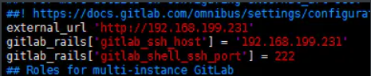
修改gitlab.rb文件
1 | # 重启gitlab容器 |
此时项目的仓库地址就变了。如果ssh端口地址不是默认的22，就会加上ssh:// 协议头
打开浏览器输入ip地址(因为我的gitlab端口为80，所以浏览器url不用输入端口号，如果端口号不是80，则打开为：ip:端口号)
4.创建一个项目
第一次进入要输入新的root用户密码，设置好之后确定就行
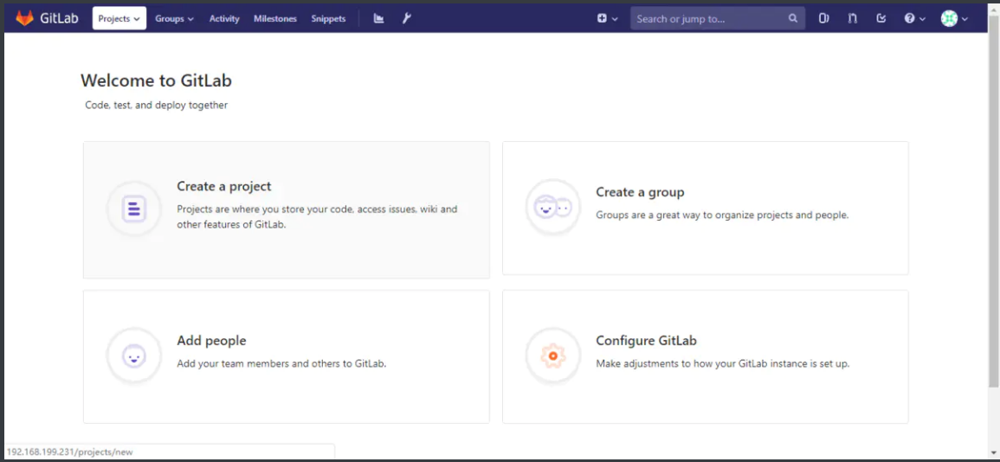
gitlab页面
下面我们就可以新建一个项目了，点击Create a project
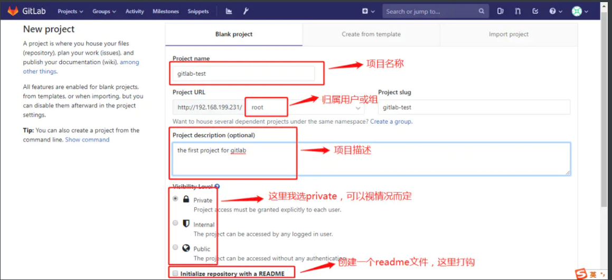
Create a project
创建完成后：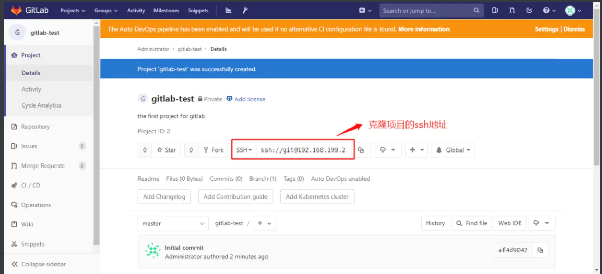
创建完成！
二、用户使用
1.下载git.exe
双击git.exe安装git（一直点下一步，直到完成）
点击电脑桌面空白地方右键看到如下两行即安装成功
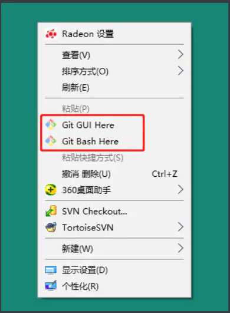
image.png
2.登录gitlab网页
url：http://192.168.1.111
填写账号密码登录
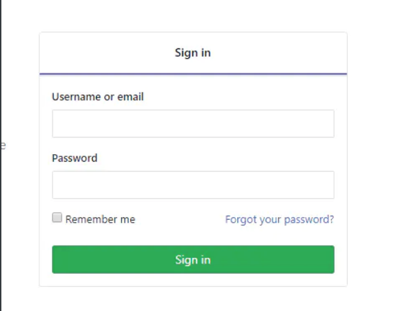
登录页面
3.设置ssh
1.打开本地git bash,使用如下命令生成ssh公钥和私钥对
1 | $ ssh-keygen -t rsa -C 'xxx@xxx.com' |
然后一路回车(-C 参数是你的邮箱地址)
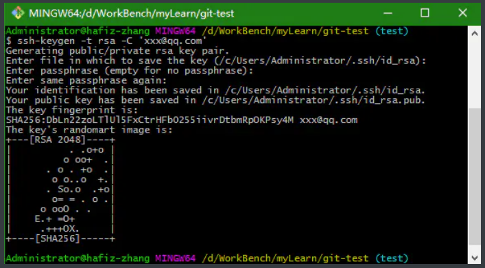
生成密匙
2.然后输入命令：
1 | # ~表示用户目录，比如我的windows就是C:\Users\Administrator，并复制其中的内容 |
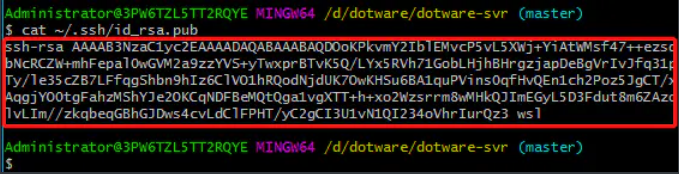
公匙
3.打开gitlab,找到Profile Settings—>SSH Keys—->Add SSH Key,并把上一步中复制的内容粘贴到Key所对应的文本框
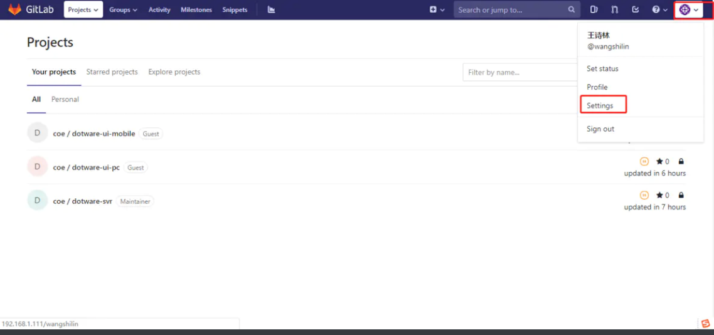
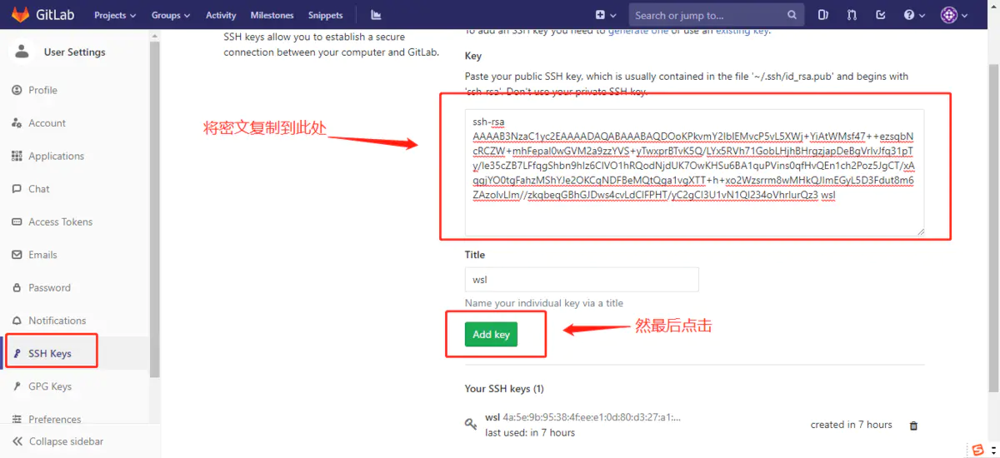
添加公匙到gitlab
4.从gitlab克隆代码
1.回到gitlab页面点击projects->your projects
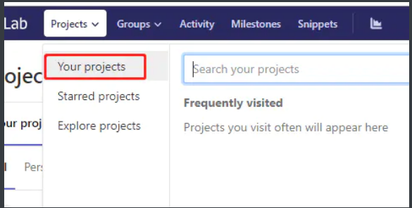
2.选择一个需要克隆的项目，进入
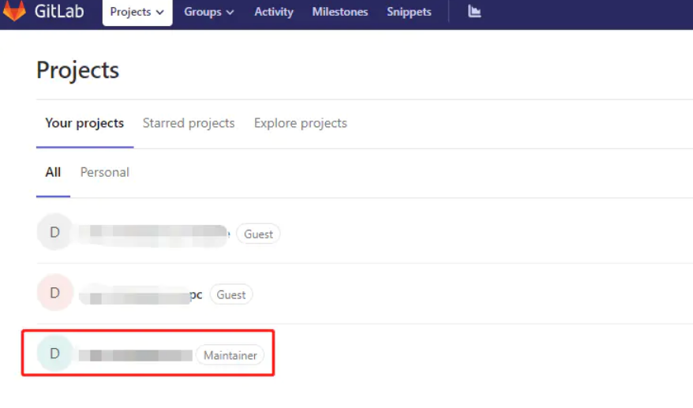
我的项目页面
3.点击按钮复制地址
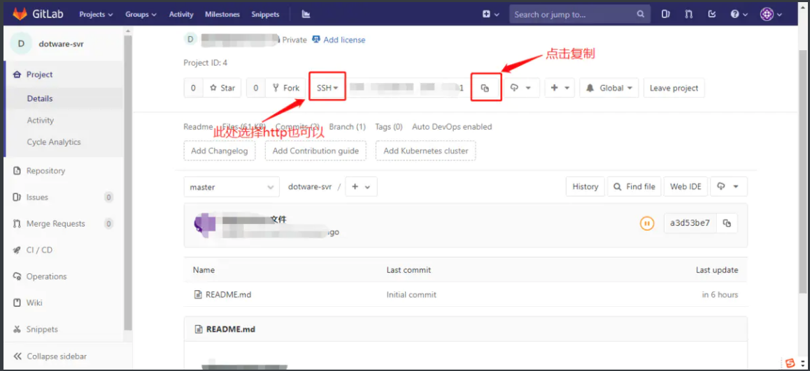
复制ssh地址
4.新建一个文件夹，我在这里在我的电脑D盘下新建project文件夹
5.进入projects文件夹右键选择->Git Bash Here
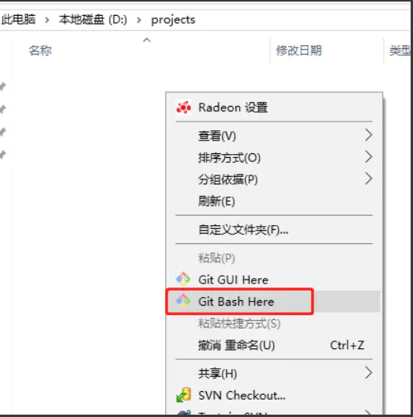
点击Git Bash Here
6.设置用户名和邮箱
1 | $ git config --global user.name "你的名字" |
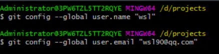
设置名字和邮箱
7.克隆项目
1 | $ git clone 项目地址 |
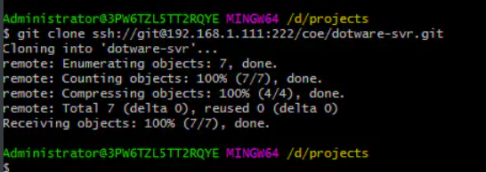
克隆项目
8.查看projects文件夹，项目已经克隆下来了
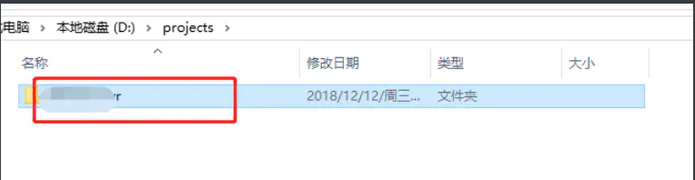
项目目录
5.提交代码到gitlab
1.基于以上步骤，在克隆的项目文件夹下新增一个测试文件
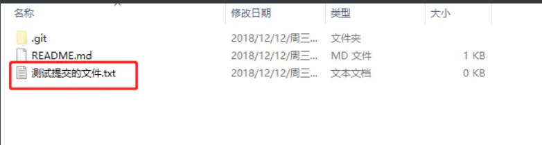
新增txt文件
2.查看同步状态
在项目文件夹下右键点击->Git Bash Here
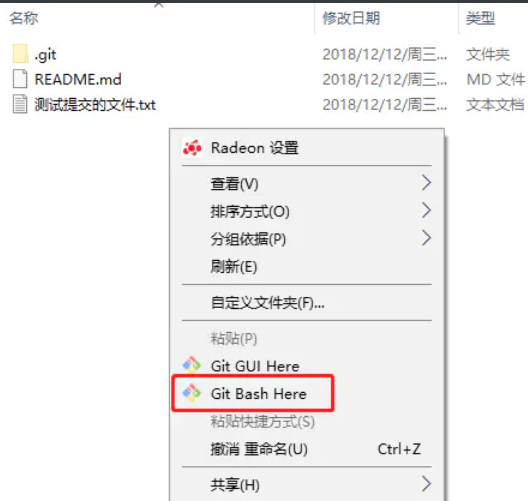
输入
1 | $ git status |
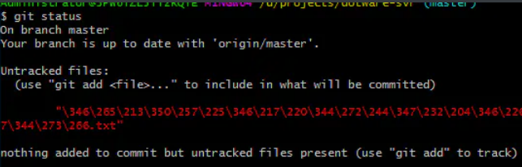
状态
可以看到红色部分有需要提交的文件
3.提交代码
输入
1 | $ git add 测试提交的文件.txt |
(“git add“后加“.”则添加全部文件，也可以加”*.txt”表示添加全部需要提交的txt文件 )
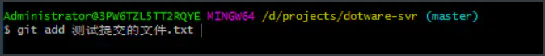
add需要提交的文件
然后输入以下命令提交并添加提交信息
1 | $ git commit -m "message" |
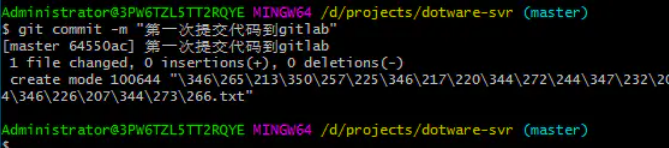
commit
最后输出以下命令提交到gitlab
1 | $ git push origin master |
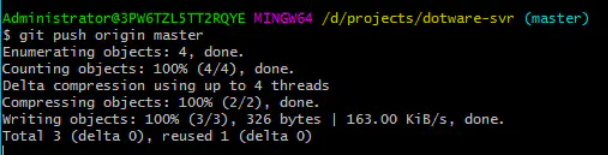
push
提交完成啦
再回到gitlab上看该项目就可以看到多了一个txt测试文件

...
...
Copyright 2021 sunfy.top ALL Rights Reserved